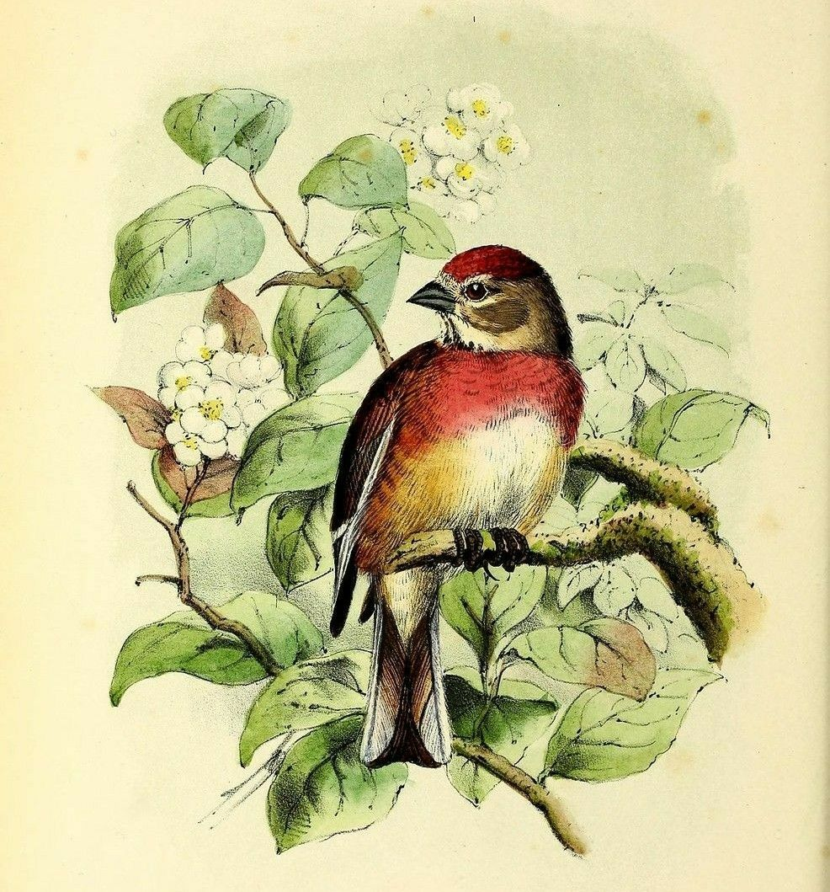

Passaros HTML
Mostre o quanto você gosta de Passaros:
Porque passarós são tão legais


- Coração rápido:
O coração de um beija-flor bate até 1.200 vezes por minuto.
- Dormir voando:
O Andorinhão-preto consegue voar por dez meses seguidos sem tocar no chão.
- Visão de raio-X:
Muitos pássaros veem a luz ultravioleta que nossos olhos não enxergam.
- Sem dentes:
Os pássaros não têm dentes. Eles engolem pequenas pedras para ajudar a moer a comida.
- O maior de todos:
O avestruz é o maior pássaro do mundo e bota o maior ovo que existe.
- O menor de todos:
O beija-flor-abelha é tão pequeno que parece um inseto grande.
- Memória gigante:
A gralha-sapo esconde milhares de sementes e lembra o lugar de quase todas.